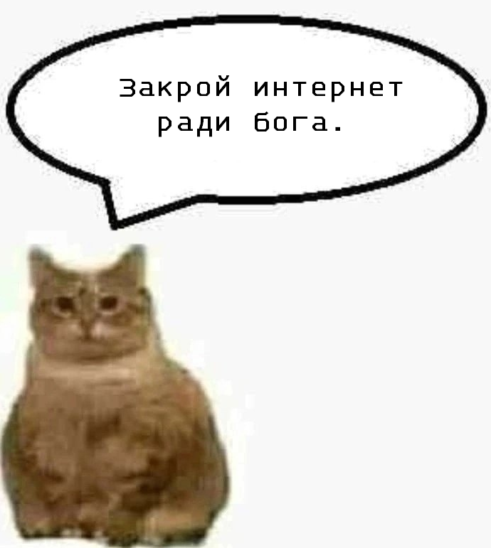

Добро пожаловать на официальный сайт Собора Сумашедших!
Здесь вы найдете творчество душевнобольных мемные переводы игр, в которые задротят Исек и Сыр (aka основатели Собора Сумашедших).
Заранее предупреждаю, здесь будет много локальных шуток, которые поймут только участники Собора. Это не должно сильно повлиять на ваш опыт с нашими модами, но имейте это в виду.
